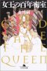
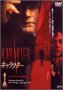

31
30
29
28
27
26
|
24
23
22
21
20
19
18
|
17
16
15
14
13
12
11
|
10
9
6
5
4
|
3
2
1
8/31(Sun)
-
cape henlopen state park
へ
-
今日はきちんと海に入る、
波が高くておもしろかった
-
で、砂浜に寝転がりながら、ここ数日読んでいた
森博嗣
を読み終った

-
規則を作って思考停止することと、
規則は作らずその都度考えること、
どっちがいいんだろうみたいな言葉が印象的だった
-
けれど、全体的に、あんまり好みではなかった
-
さて、今回の仕入れ分は既にこれで尽きてしまった
8/30(Sat)
8/29(Fri)
8/28(Thu)
-
andrea から
ICMF-2004
という横浜の研究会を教えてもらったので、とりあえず abstract を出しておこう
-
来年の 5 月に、お金が (というよりも、今の居場所が、というのが正しいか?)
どうなるか分からないんだが、とりあえず
-
ネタは、使い回し
(といっても、まだ仕上っていないので、早いとこ (一つでも) 仕上げねば
(と、日夜がんばっている
(んだが、なかなかなぁ)))
-
abstract は
ここ
(結構、書き下ろしてしまった、時間掛かった…)
-
横浜かぁ、旧友は引っ越したしなぁ。
もし行ったら、今度こそダイブツを拝もう、と思う今日この頃
-
←
4/19/2004,
4/14/2004,
3/19/2004,
3/18/2004,
11/29/2003,
8/28/2003
→
-
[phys]Non-Uniform
8/27(Wed)
8/26(Tue)
8/24(Sun)
-
rehoboth beach
に行く
(webcam)
-
(ocean city に比べると)
人が少ないという話で行ったのだが、
帰る頃 (2:00 pm) には足の踏み場もない程の人出だった
-
chesapeak bay とはちがって外海、
塩っぱいし水が冷たくて、結局腰までしか浸からなかった
-
ちょっと疲れがたまっていて、風邪っぽかったというのもあるが
-
bay-bridge
は行きに $2.50 とられる
-
ガソリンが $1.65 / galon とかに値上がりしている
-
[phys]Non-Uniform
-
夜、気分転換に、今回購入した DVD の最後の一本
「karakter」
を見る

-
もともとは
fujimoto さんの感想
を見て記憶にとめておいたもので、
今回生のオランダ語の素材が何か一本欲しいなと思って買った
-
日本の配給会社の問題なんだろうけど、何でミステリーという売り方になるのか…
(ちゃんと映画見てんのかな、宣伝してる人間は)
-
だから amazon の review みたいなことになるんだ
-
また、父と息子の話と見るのも (多い感想みたいだけど) 、
何かしっくりこない
-
単なる純愛映画、というのが私の感想。
いや、そこが良かった
-
というか、父親がよかった。
どっちが主演になるのだろうか?
息子の方なのかな
-
脇役の
弁護士事務所のボス、
あと息子のあこがれる人もよかった
-
9/3/2003 付記:
てな感想は、文字の上では fujimoto さんのそのまんまであった。
無意識の記憶か
-
それを読んだときの印象は、
3 者の愛憎物語かと思ったんだな、そういえば
-
これを踏まえての感想は、
父親には感情移入できたが、
息子と母親にはできなかった、ということ。
あとあのボスね
-
←
1/13/2004
8/23(Sat)
-
「国民年金未納の場合、個人年金控除なしに 厚労省方針」
@asahi
(lc)
-
これは、国民年金未納者の存在を認めたということなのだろうか…
-
←
5/4/2004,
5/3/2004,
5/2/2004,
4/28/2004,
4/23/2004,
4/15/2004,
4/5/2004,
8/23/2003,
8/1/2003,
6/22/2003,
10/1/2002,
7/30/2002
→
-
午後、今日は
「初恋のきた道」
を鑑賞
-
人望があるってことは大事だと思った。
しかし、金を出してでもやるという決断をしなければ、
あの出来事は起こらなかった訳だよな
-
あの学校の生徒は大変だな、というのは余談
-
急に先生が戻って来たり、臨時の先生が急に授業をしたり、
その度に急に呼び出されたのかね
-
先日見た crouching tiger, hidden dragon にも出ていた
Zhang Ziyi (章子怡) はこれが debut らしい
-
中国人の名前をカタカナ表記のみにするが標準になったんだろうか…
(イメージがわきにくいので、漢字併記してほしいんだが)
-
zhang は「張」だけではなかったんだな、結構多い
8/22(Fri)
8/21(Thu)
-
備忘録
-
最近は
mp3 の encode は lame,
mp3 の decode madplay
-
vstserver なんてものが出来たようだ
(けれど、遊ぶ暇ない…)
-
「展示は退役軍人の意向反映 エノラ・ゲイ公開の博物館長」
@asahi
(lc)
-
8/13/2003,
7/17/2002,
7/13/2002
→
-
8/13 の記事の時は、客観的な展示の可能性もなきにしもあらずだと思ってたが、
やっぱりそうではないんだな
(まぁいずれも当事者であるわけで)
-
しかし、展示を見る人間が、そういう思惑を越えたものを感じる機会も
zero ではないだろう、と思っておこう
-
8/25/2003 追加:
改訂版
lc
-
[phys]Non-Uniform
8/20(Wed)
-
「2003/8/19/ 理系白書 @ fujimoto さんの日記」
(lc)
-
これまで、一方的な (肯定的な) 評価しか目にしてこなかったが、
いや確かに一理も二理もある意見だ
-
自分が恵まれていないと思って心が狭くなっている人間は、
視野も狭くなるものなんだな
-
恵まれていなくても、心は広く持ちたいもんだ
-
[phys]Non-Uniform
-
これまで手でやってた fitting を、おおよその傾向が分かって来たので、
自動的に計算するような code を準備
-
やっと産業革命、これが結構大変……
この threadshold を越えられないと、文明はやって来ない
-
とりあえず一通りラインが動きはじめる
-
手工業時代の結果と逐一チェック、しておかないと足をすくわれるので、
面倒でも踏ん張る
-
gnuplot 組み込みの fit と gsl の fit の結果が、
おおよそ一致したので一安心
8/19(Tue)
-
[phys]Non-Uniform
-
うむ、間に合わなかった…が、実施は週末なので (という execuse)
-
とか言いつつ、家に帰ってみると 2/4 は間に合っていた
-
残り 2/4 の内、一つは私には既にどうすることもできないのでいいのだが、
最後の一つ (が最初の「間に合わなかった」奴) は、
さて週末までに何とかなりますか?
-
週末予定を変更し、週末までの weekly plan に変更
-
で早速、日本から届いた region 2 の
「デリカテッセン」
をアメリカで買った
オランダ・メーカーのプレーヤーで鑑賞
- ノスタルジーに浸るのが目的であったが、
もう 10 年以上経つわけで、
話の筋なんか細かいところは忘れていて、
純粋に楽しんだ
- 音楽が (というかノリが) よかった、やっぱり
- ちょうど今 cello が気分的に boom なのもあって
musical saw との duet もよかったけど、
それだけでなくて
- が、
(DVD の) 絵は良くない、「デジタルニューマスター版」とあるが何だこれ?
- というか映画館で見た時の印象が「絵がきれいだな」というのだった
……記憶が美化したかな
- 何か「アメリ」とかいう作品 (当然見ていない) の監督の前作だよってのばっかり、
世の中こういう仕組み (商売) で動いてるんだな
- 流行からはずれるというのはこういうことなんだな、
ハッハッハッと思う
- 踊らされるのではなくて踊る、というか
- 踊らせる側からすると、(ある程度) 退化した人間の方が操作しやすいのだろうな
- 悪いのは企業とか組織とか何やかや、その辺なのか
(そいつらのエゴが個人のそれを優先している現状というか)
- それが文明か、知恵か
- 効率化から分業して、
近視眼的になっていって、
big picture が見えない人が多くなって、
彼ら (正直者?) をカモにする奴らが出て来て、…
- どれも必然 (当然) に見えるな
- 戻るんではない道ってあるのかな
(しようしよう)
- この立ち位置を変えないで、どう幸せに生きていくか、
というのはやっぱり難しい
- 1/20/2007:
大衆操作されすぎな日本人
- 9/6/2005:
準備されたモノの中からの選択の自由?
- サマリー: マーケット
8/18(Mon)
8/17(Sun)
8/16(Sat)
8/15(Fri)
-
出勤、
andrea が帰還 (予定)、なので休み気分も終り
-
テレビ見て、NY は大変そうだ
(停電…と書いておかないと、後日何のことか覚えてない)
-
ここは全然問題ない、
けれど、ここ数日妙に暑い、かわいそうに
-
andrea と議論
-
[phys]Non-Uniform
8/14(Thu)
8/13(Wed)
8/12(Tue)
8/11(Mon)
8/10(Sun)
-
夜、テレビでやってた tom cruise の "jerry macguire" を途中から見た
-
tom cruise はこういう軽薄な男にはまっているな、
奥さんのキャラも何か受け入れられなくなっている
(前見たときはどうだったか忘れた)
-
cuba gooding jr 「俺は踊らないぞ」みたいなこと、言ってたな
8/9(Sat)
8/6(Wed)
8/5(Tue)
-
日曜
の夕食を食べた chinese restaurant でもらった fortune cookie を朝食べる
-
"
Be content with your lot.
One cannot be first in everything.
"
8/4(Mon)
8/3(Sun)
-
washington d.c. に行く
-
やっと swatch の店を発見して
(union station の中)、電池交換 (skin の奴って普通に売ってるのかな?)
-
手持ちの automatic の "Last Week Next Week"
(1997 春夏モデルとあるな)、
プラスチックが劣化してベルト用の穴から割れてしまった
-
現在、片ベルトで懐中時計と化しているが、
何かよい方法はないものか
-
そもそも、swatch が通常のベルト取り付け機構を使ってりゃ、
割れたりしないのに…
-
互換性なしのオリジナル・タイプが、
阿呆みたいにただの steel の棒を通すだけ
-
緩いとまずいのでキチキチに作ってあるのだけれど、
ベルト交換時にちょっとコネただけで割れた
-
まぁベルトの売上も大事なんだろうけど
-
そもそも swatch は使い捨てが (作り手の) concept なんだろうけど、
そんなもん知ったこっちゃない
-
眼鏡屋のノリで、
研磨剤を付けてグラインダーで磨いてくれて、浅い scratch はとれた
8/2(Sat)
8/1(Fri)
-
8 月がはじまった
-
APS/DFD03
申し込んだ
-
[news]
「年金・保険料の二重払い解消 日米政府が協定締結に合意」
@asahi
(lc)
-
それだけ在米日本人が増えたってことなんだろうか
(声の小さい人間が損をする世の中、
世の中とは正しいとか正しくないとか関係なく動くもの)
-
←
5/4/2004,
5/3/2004,
5/2/2004,
4/28/2004,
4/23/2004,
4/15/2004,
4/5/2004,
8/23/2003,
8/1/2003,
6/22/2003,
10/1/2002,
7/30/2002
→
-
[news]
「朝鮮学校卒の入学資格、大学判断で 文科省検討」
@asahi
(lc)
-
[news]「一生ずっとフリーター可能なのか 第一世代は崖っぷち」
@asahi
(lc)
- moriyama より
- 一番自己中心的な人たちってのは、普通の人達なんだろうな
- 大変だという人を見ても、自分も大変なんだと心の中で言って終ってしまえる人達
- ホームレスの人達は、実際はどうなのかきちんと知らないが、
出来る部分でお互い助け合っているんではないかな、と想像する
- 金持ちも、偽善だか後ろめたさだか何だかしらないけど、
何かを意識しているんではないかな、と想像する
- （戦略として、majority は味方に付けるべきだってのはあるんだろうけれど…）
- 7/24/2003
→
- 5/13/2008:
「貧しいとき、病めるときには、かつての知友は知らない顔をして通り過ぎてゆき、
どこの家のドアも開かない。」（内田樹）
- 去年の夏の終りから切れていた車のエアコン、
freon を補給しておく
- 最初行ったところ (jiffy lube というオイル交換ステーションのチェーン店)
では 3 lb までで $99 と言われ、高すぎと思って、
別のガレージに行くと $30 + $10/lb で 2 lb だったので $50
- 半額と思うと気分がよい
(実際には、まぁ、前者がボッタクリに近いもんがあるんだろうけど)
31
30
29
28
27
26
|
24
23
22
21
20
19
18
|
17
16
15
14
13
12
11
|
10
9
6
5
4
|
3
2
1
 2003年8月
2003年8月{kind=link}
{kind=link}
{kind=link}
{kind=link}
{kind=link}